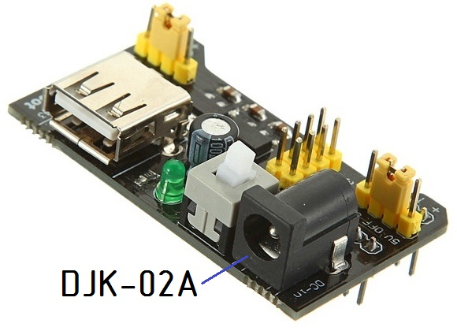
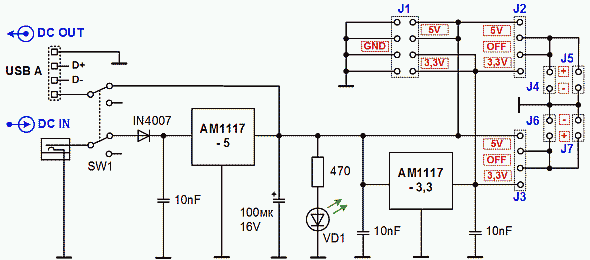
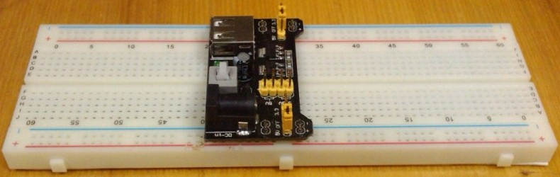

Модуль питания макетной платы
Модуль питания макетной платы представляет собой стабилизатор постоянного напряжения. Формирует одновременно два выходных фиксированных напряжения на каждом выходе. Конструкция устройства обеспечивает легкую установку на макетную плату Arduino EIC-102 для монтажа без пайки или Arduino EIC-402. Размеры макетной платы 165×55 мм.
Модуль питания можно применять для электропитания прибора, который питается от USB порта. Стабилизацию напряжений выполняют две микросхемы, включенные последовательно: AMS1117-5.0 и AMS1117-3.3 Микросхемы имеют защиту от перегрузки по току и перегрева. При отключении стабилизатора 5 В стабилизатор 3,3 В прекращает работу. Для индикации включения на плате установлен светодиод, питающийся напряжением 5 В. Имеется нажимной тумблер включения.
Характеристики
- Входное постоянное напряжение — 6,7 – 9 В.
- Выходные напряжения — 3,3 и 5 В.
- Максимальный суммарный ток нагрузки двух стабилизаторов — 0,7 А.
- Размеры — 53 x 32 x 23 мм


При установке модуля стабилизатора на макетную плату необходимо соблюдать полярность подачи питания. На выступах платы модуля возле контактных площадок штырей соединителей обращенных вниз нанесена маркировка "+" и "–". Установить надо так, чтобы знак "+" соответствовал красной полосе, а "–" синей. Так модуль питания MB102 обеспечивает одновременную подачу энергии на верхнюю и нижнюю пары шин питания макетной платы.

Благодаря перемычкам, находящимся возле выступов платы можно задать напряжение, подаваемое на каждую пару проводников питания. Установка перемычки на два средних проводника отключает питание в коммутируемых линиях. Если на обоих выходах перемычками выбрано отключение, то светодиод не будет светиться.
Ближе к середине платы стабилизатора расположена вилка из восьми контактов. Устанавливать на нее перемычки нельзя. Вилка обеспечивает подключение жгута проводов питания устройств, расположенных вне макетной платы. На контактах питания USB-разъема, имеющего тип А, напряжение 5 В для снабжения питанием соответствующих приборов через USB-кабель.
Напряжение на стабилизатор подается через штекер DJK-02A. Его контактная часть имеет диаметр 2,1×5,1 мм. Центральный контакт – плюс. Для предотвращения неполадок в случае ошибки полярности в этом разъеме входная цепь модуля содержит диод.
USB-разъем - это один из выходов устройства. Запрещается использовать этот разъем USB в качестве входа подключения питания. Это приведет к выводу из строя микросхемы стабилизатора 5 В и порта USB. Для длительной работы стабилизатора следует избегать критических режимов, при которых потребляемый нагрузкой ток приближается к предельно допустимому значению и не допускать перегрев микросхем, несмотря на то, что модуль питания MB102 имеет собственные средства защиты.
Источники
arduino-kit.ru - Модуль питания Breadboard Power Supply MB102
tehnopage.ru - Макетная плата и модуль питания MB-102. Схема, характеристики, конструкция